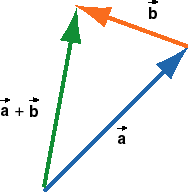
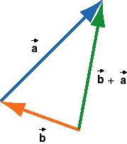

|
|
 |

The sum of the two vectors  and
and  shown on the left is
constructed graphically in the two diagrams on the right,
showing + and + , respectively.
shown on the left is
constructed graphically in the two diagrams on the right,
showing + and + , respectively.
In constructing + , the tail of vector is joined to the tip of vector
, and in constructing + , the tail of vector is joined to the tip of vector .
In both cases, the sums +
or + are
represented by an arrow in green that points from the free
tail end to the free tip of the joined vectors.
Suppose the vectors represent displacements. Then the sums
+ or + represent the individual
displacements carried out in succession, first then or first then .
As you can see, vector addition commutes, i.e.,
+ =
+ .